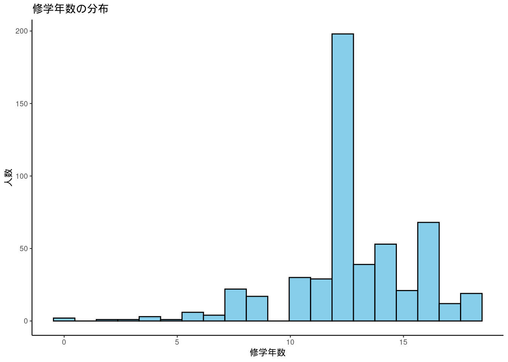
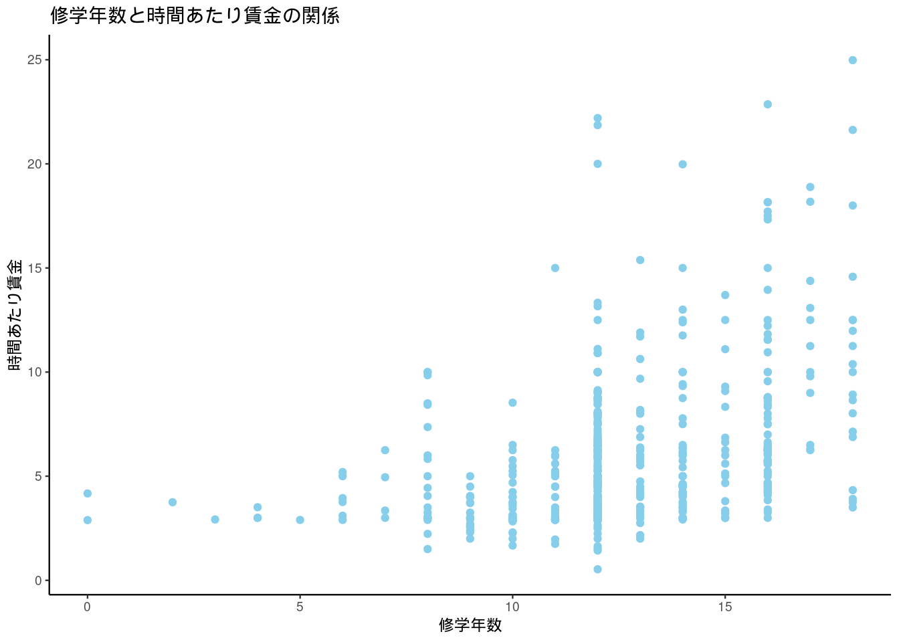
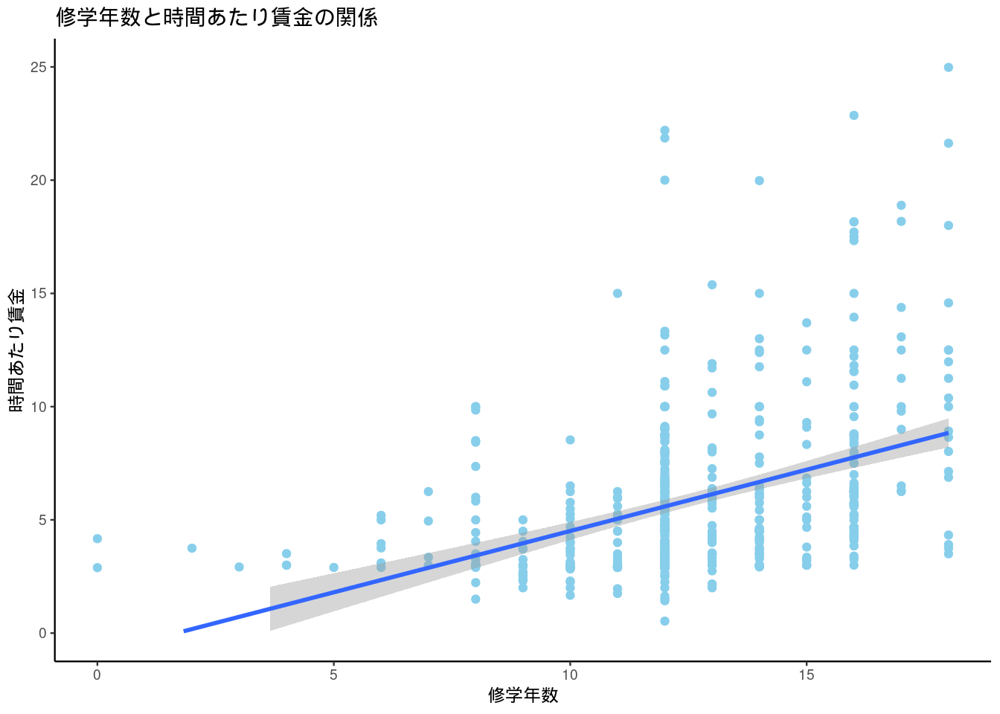
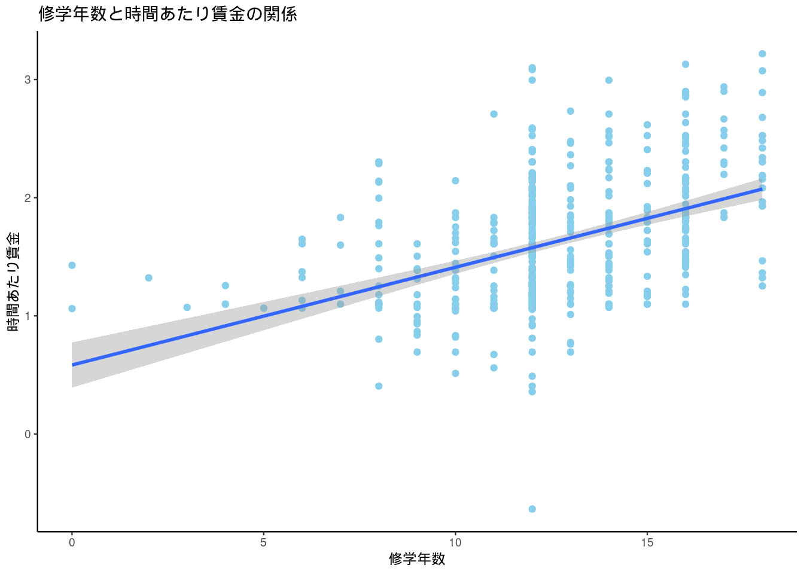
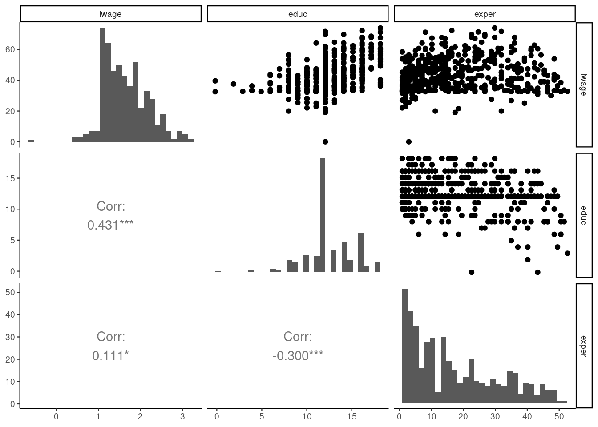

library(tidyverse)
library(GGally)
library(wooldridge)
data("wage1")回帰分析による教育の収益率の推定
労働経済学A講義資料
データの読込み
ここで用いるのは，Wooldridgeのテキストで使われている”wage1”というデータ。Rにはwooldridgeパッケージがあるので，それをインストールすれば使える。元のデータは，1976年のアメリカのCurrent Population Survey。古いデータではあるが，練習用には便利。
データの詳細は，ヘルプで確認できる。
?wage1データの概要
glimpse(wage1)Rows: 526
Columns: 24
$ wage <dbl> 3.10, 3.24, 3.00, 6.00, 5.30, 8.75, 11.25, 5.00, 3.60, 18.18,…
$ educ <int> 11, 12, 11, 8, 12, 16, 18, 12, 12, 17, 16, 13, 12, 12, 12, 16…
$ exper <int> 2, 22, 2, 44, 7, 9, 15, 5, 26, 22, 8, 3, 15, 18, 31, 14, 10, …
$ tenure <int> 0, 2, 0, 28, 2, 8, 7, 3, 4, 21, 2, 0, 0, 3, 15, 0, 0, 10, 0, …
$ nonwhite <int> 0, 0, 0, 0, 0, 0, 0, 0, 0, 0, 0, 0, 0, 0, 0, 0, 0, 0, 0, 0, 0…
$ female <int> 1, 1, 0, 0, 0, 0, 0, 1, 1, 0, 1, 1, 0, 0, 0, 0, 1, 1, 1, 1, 1…
$ married <int> 0, 1, 0, 1, 1, 1, 0, 0, 0, 1, 0, 0, 1, 0, 1, 1, 1, 0, 1, 1, 0…
$ numdep <int> 2, 3, 2, 0, 1, 0, 0, 0, 2, 0, 0, 0, 2, 0, 1, 1, 0, 0, 3, 0, 0…
$ smsa <int> 1, 1, 0, 1, 0, 1, 1, 1, 1, 1, 1, 1, 1, 1, 1, 1, 1, 1, 1, 1, 1…
$ northcen <int> 0, 0, 0, 0, 0, 0, 0, 0, 0, 0, 0, 0, 0, 0, 0, 0, 0, 0, 0, 0, 0…
$ south <int> 0, 0, 0, 0, 0, 0, 0, 0, 0, 0, 0, 0, 0, 0, 0, 0, 0, 0, 0, 0, 0…
$ west <int> 1, 1, 1, 1, 1, 1, 1, 1, 1, 1, 1, 1, 1, 1, 1, 1, 1, 1, 1, 1, 1…
$ construc <int> 0, 0, 0, 0, 0, 0, 0, 0, 0, 0, 0, 0, 0, 0, 0, 0, 0, 0, 0, 0, 0…
$ ndurman <int> 0, 0, 0, 0, 0, 0, 0, 0, 0, 0, 0, 0, 0, 0, 0, 0, 0, 0, 0, 0, 0…
$ trcommpu <int> 0, 0, 0, 0, 0, 0, 0, 0, 0, 0, 0, 0, 0, 0, 0, 0, 0, 0, 0, 0, 0…
$ trade <int> 0, 0, 1, 0, 0, 0, 1, 0, 1, 0, 1, 0, 0, 0, 0, 0, 0, 0, 0, 0, 0…
$ services <int> 0, 1, 0, 0, 0, 0, 0, 0, 0, 0, 0, 0, 0, 0, 0, 0, 0, 0, 0, 0, 0…
$ profserv <int> 0, 0, 0, 0, 0, 1, 0, 0, 0, 0, 0, 1, 0, 0, 0, 1, 0, 1, 0, 1, 1…
$ profocc <int> 0, 0, 0, 0, 0, 1, 1, 1, 1, 1, 1, 0, 0, 0, 1, 1, 0, 1, 0, 0, 1…
$ clerocc <int> 0, 0, 0, 1, 0, 0, 0, 0, 0, 0, 0, 1, 0, 0, 0, 0, 1, 0, 0, 0, 0…
$ servocc <int> 0, 1, 0, 0, 0, 0, 0, 0, 0, 0, 0, 0, 0, 0, 0, 0, 0, 0, 0, 1, 0…
$ lwage <dbl> 1.1314021, 1.1755733, 1.0986123, 1.7917595, 1.6677068, 2.1690…
$ expersq <int> 4, 484, 4, 1936, 49, 81, 225, 25, 676, 484, 64, 9, 225, 324, …
$ tenursq <int> 0, 4, 0, 784, 4, 64, 49, 9, 16, 441, 4, 0, 0, 9, 225, 0, 0, 1…526人の労働者について24の変数が格納されている。変数の中には，基本的な変数の対数変換や，二乗なども含まれている (通常これらは自分で作成する)。
ここでは，賃金と修学年数との関係に注目する。賃金と修学年数の分布 (ヒストグラム)と散布図を描いてみよう。
wage1 %>%
ggplot(aes(educ)) +
geom_histogram(bins = 20, fill = "skyblue", color = "black") +
labs(title = "修学年数の分布",
x = "修学年数",
y = "人数")
wage1 %>%
ggplot(aes(wage)) +
geom_histogram(bins = 20, fill = "skyblue", color = "black") +
labs(title = "時間あたり賃金の分布",
x = "時間あたり賃金",
y = "人数")
wage1 %>%
ggplot(aes(educ, wage)) +
geom_point(color = "skyblue") +
labs(title = "修学年数と時間あたり賃金の関係",
x = "修学年数",
y = "時間あたり賃金")
回帰分析
散布図を見ると，教育水準が高いほど時間あたり賃金も高いことがわかる。ここで，われわれが知りたいのは，修学年数が1年増加すると，どの程度賃金が上昇するかということである。
そのため，散布図で示された修学年数と時間あたり賃金との関係に，最も良く当てはまる直線 (回帰直線)を引いてみよう。
wage1 %>%
ggplot(aes(educ, wage)) +
geom_point(color = "skyblue") +
geom_smooth(method = "lm", formula = y ~ x) +
ylim(0, 25) +
labs(title = "修学年数と時間あたり賃金の関係",
x = "修学年数",
y = "時間あたり賃金")
回帰直線は右上がりであり，修学年数が増加すると時間あたり賃金が上昇するという関係を表している。回帰直線の式は，最小二乗法 (OLS)で求める。
wage1 %>%
lm(wage ~ educ, data = .) %>%
summary()
Call:
lm(formula = wage ~ educ, data = .)
Residuals:
Min 1Q Median 3Q Max
-5.3396 -2.1501 -0.9674 1.1921 16.6085
Coefficients:
Estimate Std. Error t value Pr(>|t|)
(Intercept) -0.90485 0.68497 -1.321 0.187
educ 0.54136 0.05325 10.167 <2e-16 ***
---
Signif. codes: 0 '***' 0.001 '**' 0.01 '*' 0.05 '.' 0.1 ' ' 1
Residual standard error: 3.378 on 524 degrees of freedom
Multiple R-squared: 0.1648, Adjusted R-squared: 0.1632
F-statistic: 103.4 on 1 and 524 DF, p-value: < 2.2e-16この結果は，回帰直線の式が以下で表されることを示している。 \[\widehat{wage} = -0.905 + 0.541 educ\] すなわち，修学年数が1年増加すると，時間あたり賃金は0.54ドル増加することがわかる。
対数変換
多くの場合，時間あたり賃金は対数に変換した値を用いる。
wage1 %>%
ggplot(aes(educ, lwage)) +
geom_point(color = "skyblue") +
geom_smooth(method = "lm", formula = y ~ x) +
labs(title = "修学年数と時間あたり賃金の関係",
x = "修学年数",
y = "時間あたり賃金")
wage1 %>%
lm(lwage ~ educ, data = .) %>%
summary()
Call:
lm(formula = lwage ~ educ, data = .)
Residuals:
Min 1Q Median 3Q Max
-2.21158 -0.36393 -0.07263 0.29712 1.52339
Coefficients:
Estimate Std. Error t value Pr(>|t|)
(Intercept) 0.583773 0.097336 5.998 3.74e-09 ***
educ 0.082744 0.007567 10.935 < 2e-16 ***
---
Signif. codes: 0 '***' 0.001 '**' 0.01 '*' 0.05 '.' 0.1 ' ' 1
Residual standard error: 0.4801 on 524 degrees of freedom
Multiple R-squared: 0.1858, Adjusted R-squared: 0.1843
F-statistic: 119.6 on 1 and 524 DF, p-value: < 2.2e-16すなわち，回帰直線の式は， \[ \widehat{\log (wage)} = 0.584 + 0.083 educ\] 修学年数が1年増加すれば，時間あたり賃金の対数値が0.08増加する。対数値で0.08増加するというのは，時間あたり賃金が約8%増加するということである。すなわち，修学年数が1年増加すれば，時間あたり賃金が8%増加する。
重回帰分析
時間あたり賃金に影響を与えるのは，修学年数だけではない。たとえば，労働市場における経験年数は時間あたり賃金を決める重要な要素だと考えられる。そこで，以下のような回帰式を考える。
\[ \widehat{\log (wage)} = \hat{\beta_0} + \hat{\beta_1} educ + \hat{\beta_2} exper\]
この式も最小自乗法で推定することができるが，その前に変数間の関係を確認しておこう。
ggpairs(wage1[ c("lwage", "educ", "exper")],
diag=list(continuous="barDiag"),
upper=list(continuous="points", combo="facethist"),
lower=list(continuous="cor", combo ="box"))
経験年数が増加すれば時間あたり賃金は高くなることが確認できるが，相関係数は0.11と小さい。一方で，経験年数が増加するほど修学年数が減少していることがわかる。これは経験年数の短い若い労働者ほど修学年数が長いためである。
それでは最小二乗法による重回帰分析をやってみよう。
wage1 %>%
lm(lwage ~ educ + exper, data = .) %>%
summary()
Call:
lm(formula = lwage ~ educ + exper, data = .)
Residuals:
Min 1Q Median 3Q Max
-2.05800 -0.30136 -0.04539 0.30601 1.44425
Coefficients:
Estimate Std. Error t value Pr(>|t|)
(Intercept) 0.216854 0.108595 1.997 0.0464 *
educ 0.097936 0.007622 12.848 < 2e-16 ***
exper 0.010347 0.001555 6.653 7.24e-11 ***
---
Signif. codes: 0 '***' 0.001 '**' 0.01 '*' 0.05 '.' 0.1 ' ' 1
Residual standard error: 0.4614 on 523 degrees of freedom
Multiple R-squared: 0.2493, Adjusted R-squared: 0.2465
F-statistic: 86.86 on 2 and 523 DF, p-value: < 2.2e-16推定結果を式で表すと， \[ \widehat{\log (wage)} = 0.53 + 0.098 educ + 0.010 exper\]
この式が意味するのは，
- 経験年数を一定として修学年数が1年増加すれば，時間あたり賃金が9.8%上昇する
- 修学年数を一定として経験年数が1年増加すれば，時間あたり賃金が1.0%上昇する
ということである。
単回帰の場合と重回帰の場合とで，修学年数の係数が異なることに注意しよう。これは，修学年数と経験年数が相関しているためである。若い労働者ほど修学年数が長いので，単回帰では修学年数が増加することの影響に，経験年数が短いことの影響が含まれてしまい，それによって修学年数の効果が小さく推定される。一方で，重回帰では，経験年数を一定とした修学年数の影響を計測しているため，係数が単回帰の場合に比べて大きくなっている。
通常，われわれの関心は，独立変数から従属変数への因果効果である。因果効果を知るためには，従属変数に影響を与えるほかのさまざまな要因を一定として(「ほかの要因をコントロールして」という)，関心のある独立変数が変化したときに従属変数がどうなるかを見る必要がある。重回帰分析は，観察可能 (データに記録されている)要因の影響を取り除く (コントロールする)ための方法である。
実際の経験年数と時間あたり賃金の関係は単調ではなく，経験年数が増加すると賃金は上昇するが，その上昇率はだんだん小さくなっていき，一定の年齢を超えると賃金は低下する (人的資本理論を思い出そう)。そこで，そのような非線形の関係を捉えるために，経験年数の2乗項を加えた回帰式を考えよう。
\[ \widehat{\log (wage)} = \hat{\beta_0} + \hat{\beta_1} educ + \hat{\beta_2} exper + \hat{\beta_3}exper^2\]
この回帰式も最小二乗法によって推定することができる。そのためには，\(exper\)の二乗の変数を作成して，独立変数に加えれば良い。ここでは，データセットにもともと\(exper\)の二乗を計算した\(expersq\)が含まれているので，それを使う。
wage1 %>%
lm(lwage ~ educ + exper + expersq, data = .) %>%
summary()
Call:
lm(formula = lwage ~ educ + exper + expersq, data = .)
Residuals:
Min 1Q Median 3Q Max
-1.96387 -0.29375 -0.04009 0.29497 1.30216
Coefficients:
Estimate Std. Error t value Pr(>|t|)
(Intercept) 0.1279975 0.1059323 1.208 0.227
educ 0.0903658 0.0074680 12.100 < 2e-16 ***
exper 0.0410089 0.0051965 7.892 1.77e-14 ***
expersq -0.0007136 0.0001158 -6.164 1.42e-09 ***
---
Signif. codes: 0 '***' 0.001 '**' 0.01 '*' 0.05 '.' 0.1 ' ' 1
Residual standard error: 0.4459 on 522 degrees of freedom
Multiple R-squared: 0.3003, Adjusted R-squared: 0.2963
F-statistic: 74.67 on 3 and 522 DF, p-value: < 2.2e-16推定結果から，\(exper\)の係数は0.041，\(exper^2\)の係数は-0.00071である。対数賃金と経験年数の関係は二次関数であり，経験年数がゼロのときには，経験年数が1年増加すれば4.1%賃金が上昇する。しかし，その上昇率は1年につき0.14%ずつ逓減していく。つまり，経験年数が約28年になると上昇率はマイナスとなり，賃金は経験年数とともに下がり始める。
対数賃金を独立変数を修学年数と経験年数，経験年数の二乗で説明しようとする回帰式をミンサー型賃金関数という。ミンサー型賃金関数は，どのような国のデータにも当てはまりが良く，一定の条件の下で修学年数の係数\(\hat{\beta_1}\)は，教育の内部収益率として解釈できる。また，さまざまな個人属性を独立変数に追加することで，観察可能な要因をコントロールすることができる。
内生性の問題
ミンサー型賃金関数は修学年数と年齢が記録されたデータがあれば推定できるため，多くの研究で用いられてきた。しかし，推定された\(\hat{\beta_1}\)を教育の賃金に対する因果効果と見なすためには，いくつかの条件が満たされる必要がある。
いま，真のモデルが以下のように表されるとしよう。
\[\log (wage) = \beta_0 + \beta_1 educ + \beta_2 exper + \beta_3 exper^2 + u\] これは真のモデルなので，\(\beta_0\), \(\beta_1\), \(\beta_2\), \(\beta_3\)は未知のパラメータである。最小二乗法は，これらの未知のパラメータを推定する方法の1つである。また，\(u\)は誤差項と呼ばれ，修学年数や経験年数以外に賃金に影響を与えるすべての要因が含まれている。
最小二乗法によってこれらのパラメータをバイアスなく推定できるのは，独立変数と誤差項\(u\)とが無相関であるときである。しかし，この条件はほとんどの場合満たされない。
たとえば，経験年数が観測不可能だとすれば，経験年数の影響はすべて誤差項\(u\)に含まれることになる。さきほど見たように修学年数と経験年数には相関があるため，観測データを使って最小二乗法によって推定された\(\hat{\beta_1}\)は，修学年数の効果だけではなく，経験年数の効果も含んでしまう。
実際には経験年数はデータに記録されているため，独立変数に経験年数を含めることで，経験年数を一定として修学年数が1年増加したときに賃金がどう変化するかを推定することができる。しかし，賃金に影響を与える要因の多くは観察不可能である。たとえば，生まれながらの能力はデータには記録されていないが，賃金に影響を与えていると考えられる。加えて，能力の高い人は修学年数も長くなる傾向があるだろう。すると，推定された\(\hat{\beta_1}\)は，修学年数の効果だけではなく，能力が高いことの効果を含んでいることになる。このように，観察不可能な要因が独立変数と誤差項との間の相関をもたらすことを欠落変数バイアス (Omitted variable bias)という。とくに，ここでは能力が欠落変数となっているので，それによりもたらされるバイアスを能力バイアスという。 大学卒の労働者は高校卒の労働者よりも賃金が高いが，その理由は教育水準が高いからなのか，大学卒の労働者が高校卒の労働者よりも生まれながらの能力が高いからなのかは修学年数と賃金のデータだけを見てもわからない。それは，回帰分析を使っても同じことである。
このように，説明変数と誤差項に相関があるために，パラメータの推定にバイアスが生じることを内生性の問題という。理想的な実験データを除けば，およそどのようなデータを用いて回帰分析を行っても，少なからず内生性の問題は存在する。そのため，社会科学の分野では，因果関係を明らかにするためにいかに内生性の問題に対処するかということが重要である。そのための手法が因果推論である。